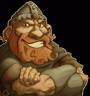

Forums galactiques > Assemblée Galactique : diplomatie officielle > attaques des peulches geante2: la correction
Pages : 1
| Baby_comdant Respect diplomatique : 54  05/02 ETU 19:45 | Score : 5 Détails Planète Gourderi – Système 1294
hochet de secoure Document 1: 2 message Journal de bord du capitaine baby_captn Jour 1 Nous avons enfin atterri sur la planète et cela fessait 128 jours que nos poucettes de combat recherchaient cette planète unique dans l'univers intergalactique. Cette planète est composée de 83% d'océan de hydroctoxygene (H8O) appeler aussi sous la forme plus courante de lait de krakken noir ,principal ingrédient de la fabrication du lait de prevache lait qui se rapproche le plus du lait de vache terrestre qui a malheureusement disparut et qui est notre principal nourriture. Nous avons décidé d'établir notre garderie sur les plages de l'un des océans. Jour 2 Nous avons enfin terminé de construire notre première ville, qui compte deja 10 000 babys et nous avons pratiquement terminé de construire les poucettes de transport pour commencer les échanges avec notre planète natal. J'ai pris la tête de la direction de la ville mais je crains que je ne sois un bon démocrate pour cette ville | ||
| Baby_comdant Respect diplomatique : 54 05/02 ETU 19:45 | Score : 1 Détails Document 2: 3 messages d'alertes
Message 1 message d'un bunker à l'ambassade Alerte de niveau 4 Cause: peuple hostile à notre présence Conséquence: ils ont pris la moitie du bunker Demande: de l'aide de la ville Information: Ce sont de grande peluche avec de long poil qui nous mitraille avec des arbalètes Message 2 message d'un bunker à l'ambassade Alerte de niveau 2 Cause: peuple hostile à notre présence Conséquence: pertes du bunker Demande: Adieu Information: Adieu Message 3 message de la porte de la ville à l'ambassade Alerte de niveau maximal Cause: peuple hostile à notre présence Conséquence: défient de leur part Demande: organiser la défense Information: nombres des peluches: innombrables Document 3: Message de détresse: Capitaine baby_captn: Nous envoyons plusieurs hochet de secours dans l'espace dans l'espoir qu'un commandant l'intercepte et vole à notre secours, nous sommes en très mauvaise posture, les peluches géantes ont commencé leur attaque et semblent entre à l'infinie. On compte deja 3 000 mort sur les 10 000 babys. GROUILLEZ VOUS!!!!!! NOM DE DIEUX!!!!! | ||
| Gurdill Respect diplomatique : 60  06/02 ETU 20:04 | Score : 5 Détails Gurdill survolait la zone dans son modeste chasseur bombardier...
Ah merde putin il est trop petit ce chasseur, je suis coincé et j'étouffe grrr ! Bon je vais mettre la radio pour me changer les idées. ...frshrffft... Bienvenue sur radio elfe, la radio des cerveaux !| Mouhaha mort de rire ! Bon allez je change de station...frshrffft... Avec les steacks hachés Gras-Boeufs, n'ayez plus jamais faim... Ah merde, de la pub ! ...frshrffft...Les barbares n'ont pas besoin de la lessive Gorzyne... Et merde ! Bon allez sa me soul, j'éteind le poste. Tiens, c'est quoi sa là bas ? On dirait des hochets ! Je vais aller voir cela, sa me changera des radio d'elfes... | ||
| murphi Respect diplomatique : 134  06/02 ETU 20:24 | Score : 2 Détails Murphi, qui volé dans son tout nouveau CLA repeint en rouge, s'amuser à regarder la galaxie...Puis il vit une planète avec des milliers de baby qui couraient le long de bâtiments, il descendit de son CLA, puis il alla voir ce qu'il se passer sur cette planètes...
Il ouvrit la porte de son CLA puis entendit une balle sifflait, en faite, une balle venait juste de percer son nouveau CLA. Prit de colère, il sorti un énorme canon a propulsion puis il tira en plein milieu de la tête du pauvre fou qui lui avait tirer dessus: "Pauvre naze!! Tu sais combien il ma coûté mon CLA tout rouge ?? De toute façon sa ne sert a rien de te parler t es mort... Il continua sa route, puis il vit un énorme rassemblement de peluche. Il les écouta un moment puis il découvrit que s'était les terroristes. Il méditât un moment... | ||
| Baby_comdant Respect diplomatique : 54 06/02 ETU 20:41 | Score : 4 Détails La panique envahissait les rues aussi rapidement qu'une bourasque de vent. Les babys courraient dans tous les sens, se fonçaient dans les uns les autres.
Soudain, l'un des babys courrut vers le capitaine qui courrait lui aussi pris de panique . Traducteur activé: pour ce qu'ils lisent se rp _Capitaine!!! Capitaine!!! Baby_comdant, non de dieu!!!! Le capitaine se retourna _Qui as t'il? Baby_sldt!!! Qui as t'il?? Et grouille à repondre!!!! _Regardez!!! Il montra le ciel. Des renforts sont arrivés. _Dieu est avec nous!!! Aller loup il y a c'est fait exprés^^ !!! Un trait d'arbalétre tranchat la tête de Baby_sldt Et Baby_captn repris sa course affolé en renversant les autres babys. | ||
| Cassandra Respect diplomatique : 316  06/02 ETU 21:13  | Score : 2 Détails Cassandra et son apprentie Estrielle revenaient d’un voyage d’affaire. Elles discutaient des différentes richesse des planètes et Cassandra montra à Estrielle par le hublot, les différentes exploitations possible.
Tout en discutant, elles survolèrent la planète Gourderi pour regarder le fonctionnement des Baby’s quand soudain le VME perdit toute énergie. Le diagnostic d’urgence annonça une puce de déchargement sur la coque. Cassandra_ Saletés des contrebandiers !!! Estrielle_ Euh.. et qu’est-ce qu’on fait dans cette situation. Cassandra_ On panique pas ! Le VME perdit rapidement de l’altitude. Elles allaient se crasher ! Cassandra_ Accroche-toi ! Cassandra manœuvra un atterrissage forcé assisté d’Estrielle, mais c’est alors qu’une…PELUCHE GEANTE ?! passa sous le VME. Le vaisseau le heurta de plein fouet, décapitant le gros nounours. Le VME tomba sur la tête moltenée qui amortit la chute. Mais le VME était en piteux états… | ||
| Estrielle Respect diplomatique : 157  06/02 ETU 21:40 | Score : 4 Détails Estrielle sortit du Vaisseaux Marchands d'Elite. Elle se retrouva en pitueuse état. Sa chevelure un peu décoiffée, elle se frotta de partout pour enlever la poussière.
- Dame Cassandra ? Vous allez bien ? Puis elle en profite pour jeter un regard autour d'elle. - Mais, où sommes nous ? | ||
| Gurdill Respect diplomatique : 60 08/02 ETU 11:56 | Score : 4 Détails Gurdill débarqua des troupes au sol
Tagazoc a toi baby_comdant,je suis venu t'aider un peu parce que tout seul, hein... L'arme ultime contre les Wookies allait être déployées: la propreté ! L'artillerie lourde était déjà en place, les canons a shampoing commençait à tirer l'oréal+. Les nains commençaient à foncer sur les grosses peluches tout en leur mitraillant des tic-tac menthol Hahaha, ils vont pas faire long feu ces nounours ! Bon allez, assez rigolé, on va boire une bière ! | ||
| Baby_comdant Respect diplomatique : 54 08/02 ETU 18:26 | Score : 0 Détails la tour 5 et la seul encore debout remarqua le nombre de soi disant secours. Vut que la plupart, arrivat par hasard et non grace au hochet de secours.
Seul le commandant Gurdill, qui "s'amusa" au nord de la ville avez intercepter un hochet de secours. Au sud, un vaisseau s'était casi "scraché" et pulvériser un nounours seul Gurdill a comprit que c'était des wookies^^ . La tour remarqua le commandant Estrielle qui sortie du vaisseau suivit de Cassandra. Et à l'ouest,un autre commandant avait flingué un baby paie à son âme qui avait essayé de viser une peulche au moment où le vaisseau atterisait. La tour 5 capta l'attention sur les soutiens obtenues au capitaine baby_cptn Gurdill, ce n'est pas baby_comdant qui dirige cette planete^^ . Traducteur activé: Message pour le capitaine Baby_cptn: Nous avons reçu des renforts, mais pas spécialement ceux désiré, l'un nous à attaqué, l'autre à eu un accident et seul le dernier nous aide. Nous devrions envoyer des renforts au vaisseau qui s'est scracher, il commence à être sous le feu ennemi. D'ailleur les commandants du bord ont eu beaucoup de chance que les peluches ne les ont pas attaqué. Baby_captn s'arreta et reflechit: _Mouais, nous pouvons les aider mais les babys sont tous pris d'une folie, je ne pense pas pouvoir les arreter. Mais je pense quand même regrouper ma garde personnel. A se moment précis, la tour 5 s'éccroulat _A merde!!! Notre defense est de plus en plus faible, j'espere que nous allons survivre..... Et il geulat haut et fort: _ Bande de gamin, calmez vous c'est la guerre, non de dieu!!!! |
Pages : 1
Forums galactiques > Assemblée Galactique : diplomatie officielle > attaques des peulches geante2: la correction